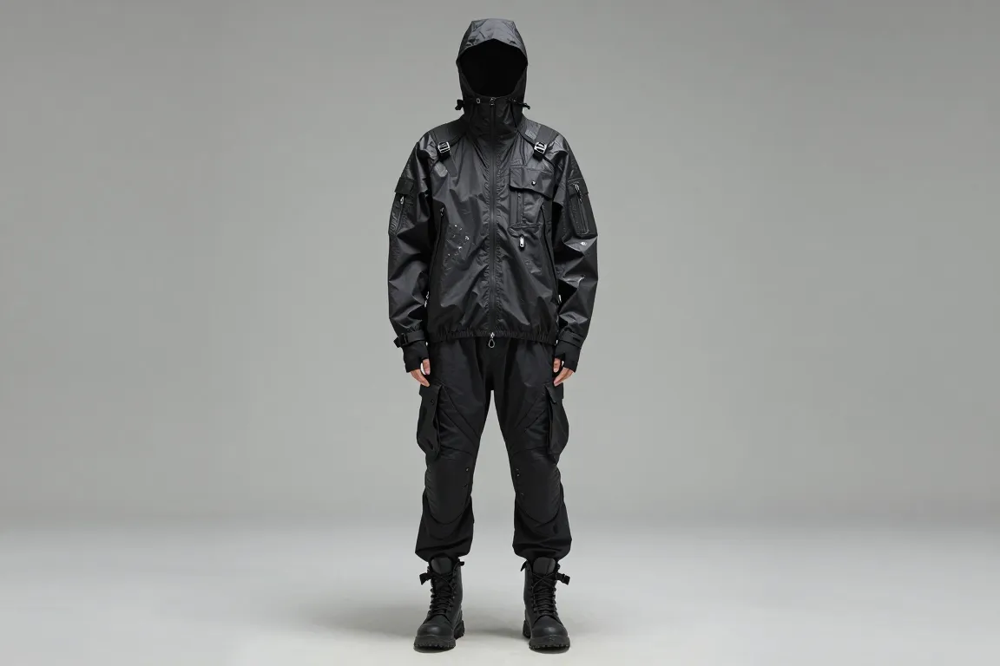

City dress made of technical outdoor cloth. A black membrane shell with taped seams, many pockets, straps and quick buckles, with a cut for motion in the street.

Core thesis
The city is a hard environment. Dress for it as for a mountain, with a shell, a system of pockets and straps, and a black, sealed surface.
Design principles
Cut the shell from a 3-layer membrane laminate and tape each seam.
Build 10 to 20 pockets into the garment so that no bag is needed.
Use a metal or a polymer quick-release buckle, rated for the load.
Cut articulated knees and elbows that follow a 3-D pattern.
Dye the whole garment black or in a dark neutral for a single surface.
Add a modular system: a hood, a detachable collar and a snap-in layer.
Fit a water-resistant zip with a storm flap along each seam line.